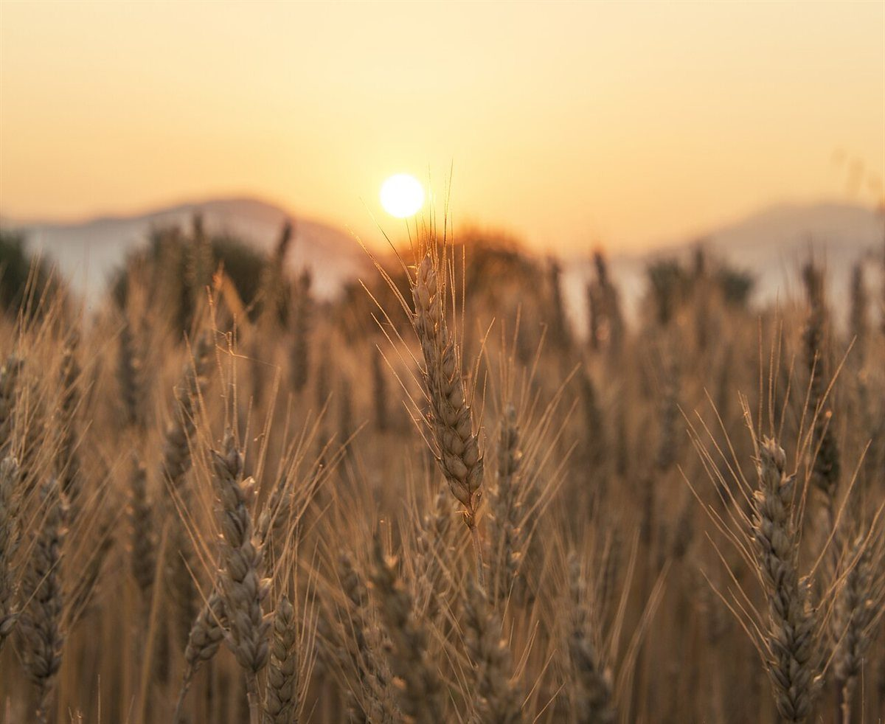
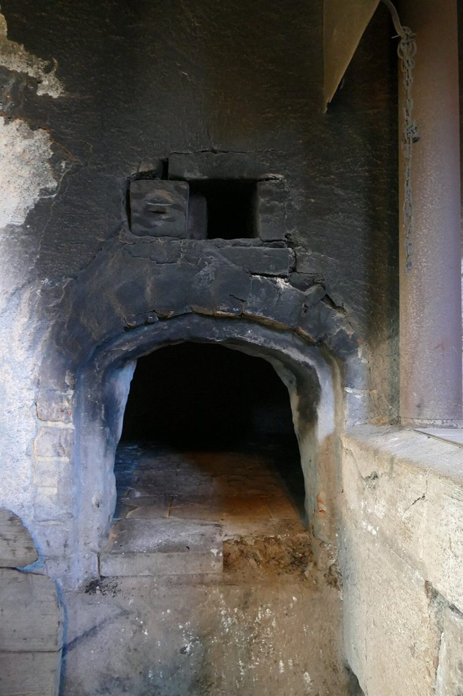

朝の通り道にあると、つい足が止まりそうな佇まい。
読み札 一口コミ
口コミ(イメージ例)
以下は制作側が作った創作の文章です。実在のお客様の投稿ではありません。
袋を開けたときの小麦の香りが、帰り道の楽しみになりそう。
読み札 二季節ごとの違いを、少しずつ味わいたくなるお店だと思う。
読み札 三3件とも、制作側が「こんな声が届いたら」と想像して書いたイメージ例です。実在のお客様の投稿ではなく、お店への評価でもありません。


口コミ
以下は制作側が作った創作の文章です。実在のお客様の投稿ではありません。
朝の通り道にあると、つい足が止まりそうな佇まい。
読み札 一袋を開けたときの小麦の香りが、帰り道の楽しみになりそう。
読み札 二季節ごとの違いを、少しずつ味わいたくなるお店だと思う。
読み札 三3件とも、制作側が「こんな声が届いたら」と想像して書いたイメージ例です。実在のお客様の投稿ではなく、お店への評価でもありません。

